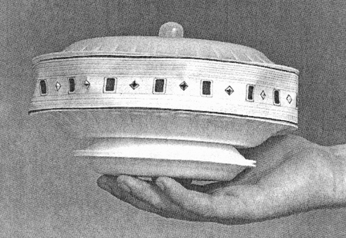

Le , à Gulf Breeze (Pensacola, Floride), Edward Daniel Walters se trouve seul avec son fils dans la maison familiale. Walters, seul dans son bureau, voit par la fenêtre un ovni se déplacer derrière les pins de
l'autre côté de la rue. Il s'empare d'un Polaroïd et prend plusieurs instantanés. Se précipitant dans la rue pour en
prendre d'autres, il est "frappé" par un rayon de lumière bleue et immobilisée. Il y a une forte odeur de cannelle et
ses pieds commençent à quitter le sol. Il entend une voix dans sa tête lui dire : Nous ne vous ferons aucun
mal. Lorsque Walters persiste à résister, son esprit est rempli d'images de chiens.
La lumière n'est plus là et il retombe sur le sol. L'ovni, qui mesurait environ 3,50 m de diamètre et 2,70 m de
hauteur, muni en dessous d'un anneau de propulsion vivement éclairé, a disparu Walters, E. & Walters, Frances: The Gulf Breeze Sightings - The Most Astounding Multiple Sightings of Ufos in U.S. History, William Morrow & Co, Mars 1990.
Le , Walters présente les 5 photographies à Duane Cook. Les 1ère
et 5ème photographies de cette série, avec une lettre du photographe appelé "Mr. X.", sont reproduites dans
le journal The Sentinel, 19 novembre 1987.
Rencontre
L'être métallique décrit par Walters
Waters raconte que le , il est réveillé par des aboiements de son chien. Il aurait
alors remonté le store de la chambre pour voir ce petit être blindé qui se tenait juste de l'autre côté de la
vitre, me regardant dans les yeux.
Le "cliché de la route"
Le fameux "cliché de la route", photo n° 19 prise Walters le 12 janvier, semblant montrer un objet réel
réfléchissant sa lumière au sol. Tim Printy fera remarquer que la lumière de l'ovni n'apparait pas reflétée sur le
capot de la voiture, contrairement à la ligne d'arbres et la route Walters < Printy, Tim: "Some Final Observations", octobre 2008
Le , Walters est sur la route 191-B dans sa camionnette à
plateau et rencontre par hasard un ovni en vol stationnaire au-dessus de la route. Il le photographie. Cette fois,
un rayon de lumière blanche paralyse Walters alors qu'il se cache sous sa camionnette. Des êtres sortent de l'ovni
et se dirigent vers le véhicule, mais Walters réussit à remonter dedans et à prendre la fuite.
Ovni au rayon bleu
Le un ovni rend à nouveau visite à la demeure des Walters et Frances (l'épouse d'Ed) manque
de peu d'être "frappée" par un rayon bleu— un événement qu'Ed s'arrangera pour fixer sur pellicule.
Le , Walters prend sa 39eme photo d'ovni
lorsqu'il est entouré d'une lumière blanche et s'évanouit. A , il revient à lui, se
demandant s'il n'a pas été enlevé durant ce temps et si l'implant qui l'avertissait qu'un ovni s'approchait ne lui a
pas été retiré.
Premiers doutes
En fin d'année, Richard H. Hall et Willy Smith appellent à
un point de vue plus sceptique sur l'affaire Hall, R. & Smith, W.: "Balancing the Scale: Unanswered Questions About Gulf Breeze", MUFON UFO Journal n° 248, décembre 1988,
en attendant que des réponses soient apportées à plusieurs points suspects comme la proximité des témoignages de pWalters et
du récit unique de pWhitley Strieber, paru quelques mois plus tôt. Smith
dénonce les photos de Walters comme étant des double-expositions Smith, W.: "Statement of Position", 7 août 1989.
Il est exclu du MUFON dont un autre membre, Bruce Maccabee, répète que les photos n'ont pu être truquées Maccabee, B. S.: "Bubba comes to Gulf Breeze", 13 novembre 2000.
Rapidement je reprenais mes recherches sur le terrain, laissant de côté pour un moment les théories et les
conjectures. Je décidais de reprendre la piste là où elle semblait la plus proche, chez une des anciennes maisons
d'Ed. En tant qu'entrepreneur, il avait construit plusieurs maisons dans la région, vécu dedans pendant quelques
mois pendant qu'il en construisait une autre, puis avait déménagé. À la mi-mai, je commençais à visiter certaines
de ces maisons dans la zone de Milton, en espérant trouver quelque chose que notre photographe éhonté aurait
laissé derrière lui... Je commençais à demander aux nouveaux occupants s'ils avaient trouvé quelque chose
d'inhabituel quand ils avaient emménagé, comme des livres sur les ovnis, des photos d'ovnis, des chambres noires,
des maquettes d'ovnis, et pourquoi pas, même de vrais ovnis.
Myers finit par arriver à la maison occupée par Walters à l'époque où furent relayés les histoires d'ovnis
racontées dans son livre. Myers explique l'objectif de sa visite aux nouveaux occupants, Robert et Sarah Menzer, qui
ont racheté sa moins de 1 an après son départ :
La maquette retrouvée dans l'ancienne maison de Walters, ressemblant aux photos de Walters

Myers : Notre journal fait une série d'articles sur les observations et les
photographies de Ed à cause de la notoriété qu'est en train d'acquérir cette région dans tout le pays et même dans
le monde. (...) Ed a écrit un livre et va dans toutes les émissions à la télévision. Il est devenu un personnage
public, une sorte de célébrité. (...) Je viens par ici parce que, comme je l'ai dit, cette maison est l'endroit où
Ed et Frances ont dit avoir pris plusieurs de ces photos en 1987 et 1988, (...) Eh bien, on se demande juste si
vous auriez peut-être trouvé ou vu quelque chose d'inhabituel depuis que vous avez emménagé ?
Robert Menzer : Trouvé quelque chose ? Comme quoi ?
(plaisantant à moitié) Eh bien, d'abord, pourquoi pas un ovni ?
(pouffant) Non, je ne peux pas dire que nous en ayons.
Ok. Et des photographies qui trainent ?
Non.
Des livres sur les ovnis, la photographie, les phénomènes inexpliqués ?
Je ne peux pas dire que nous en ayons.
Des maquettes d'ovnis... ?
Sarah Menzer (après un silence et avoir regardé son mari) : Eh bien, on a trouvé
quelque chose l'autre jour... Je vais le chercher. (...) Nous l'avons trouvé il y a quelques semaines.
Je peux le voir ?
Ce qui ressemble au premier abord à une pile de plaques de polystyrène ressemble en fait en tout point et vu de
près à l'ovni de Gulf Breeze.
Myers publie sa découverte Myers, Craig: "Gulf Breeze UFO model found", Pensacola News Journal, 10 juin 1990
puis, une semaine plus tard, qu'un jeune de Gulf Breeze (par la suite identifié comme Tommy Smith), avait aidé Walters a faire ses fausses photos d'ovnis.
Un ado complice
Un certain Tommy Smith fait son apparition, prétendant que Walters lui a demandé
d'apporter de fausses photos d'ovnis qu'il a réalisées au journal Sentinel, en prétendant qu'elles
étaient vraies.
Le , Smith est interrogé par téléphone par le maire de Gulf Breeze, Ed Gray ; le chef de
la Police de Gulf Breeze, Jerry Brown ; le journaliste du Pensacola News Journal, Craig Myers ; et le
journaliste de Channel 3 TV, Mark Curtis. L'interview et le témoignage unsworn furent transcrits par le
Court Reporter, Chris Morrow. Cette interview est à la base d'un article du News Journal le .
Dans cette interview, Smith fournit des explications à nombre des photographies et événements autour de Walters. Il déclare que Walters lui a parlé de toute
l'histoire et a répondu à ses questions sur la manière dont diverses photos furent prises.
MUFON
Le , Charles Flannigan (directeur d'Etat du MUFON pour la
Floride) annonce que le MUFON réouvre le cas de Walters pour enquêter sur ces
nouvelles allégations. Il affecte alors des Directeurs de Section d'Etat, Rex et Carol Salisberry, pour l'aider
dans cette enquête. La nouvelle est relayée à la conférence annuelle du MUFON des .
Les Salisberry concluent que certaines photos de Walters, si ce ne sont toutes, sont probablement des canularsSalisberry, Carol A. & Rex C.: Interim Report on the reopening of the Walters' UFO Case, 23 septembre 1990 < Myers, Craig: "Investigators Doubt UFO Author", Pensacola News Journal, samedi 27 octobre 1990.
Leur rapport sera cependant contesté au sein du MUFON (par Dan Wright, Directeur
Adjoint des Enquêtes) et Gary Watson (Enquêteur-en-Chef de l'organisation pour les comtés d'Escambia et de Santa
Rosa) est affecté à une contre-enquête. Après d'autres observations collectives Morrison, Ann: "'There it is!'" Gulf Breeze Sentinel, 25 avril 1991,
Watson remet sa conclusion le , soutenant le témoignage de WaltersHufford, Art: "Ed Walters, the Model and Tommy Smith", MUFON Journal n° 297, janvier 1993.